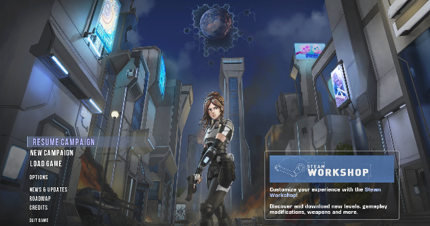
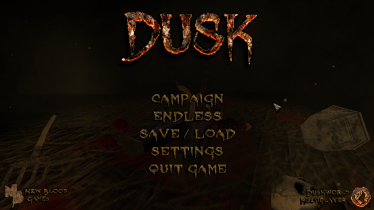
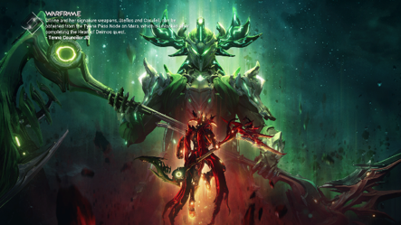
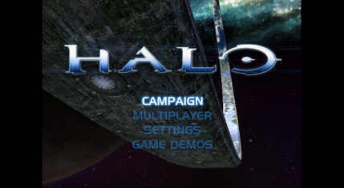

Shooter Games

Selaco. Selaco is one of my favorite shooters ever. I could be here all day droning on and on about how great this game is. The Basic story of the game is that after an apocalyptic event rendered earth uninhabitable, the few survivors flee to a sanctuary on mars named Selaco. After only a few years, however, something more sinister invades. You play as Dawn, a police officer who is trying to survive and meet up with the rest of the military survivors. The game is still in development as there are going to be 3 chapters in total. The whole game is inspired by classic games like FEAR and Halo, it is also made on the GZdoom engine; (the modified original DOOM engine for those who don’t know). So, the game’s graphics are purely pixelated, but there is so much detail in the game that you will hardly notice. The gameplay itself is fantastic, while there is not a whole lot of enemy variety (yet) the AI in this game is honestly some of the best on the market right now. They do much more than just sit there and shoot you only to then make a half-attempt to go for cover. They will make you think because they are always running around as much as you do, making the combat unpredictable and exhilarating. There is so much more that I want to say about this game, but ultimately it is much more fun to play than read about.
Selaco
Game Link 1
Game 2: Dusk: Dusk is yet another retro-shooter. The story revolves around the unnamed protagonist who gets kidnapped by a dangerous eldritch cult who has to try and fight to get revenge on them and expose their heinous crimes. This game I would say has the best atmosphere of any game I have played. The graphics are super simple and low-poly. The game has the visual style and gameplay reminiscent of the Quake series. But the low-fidelity textures and models, and superb music composed by Andrew Hulshult, work together to create an almost atmosphere that will fill you with dread and play into the story really well. The gameplay itself Is super tight and purposeful. Just like in Quake, you have the capacity to move around the arenas at Mach speeds and destroy your enemies with a satisfying arsenal of weapons.
Dusk
Game Link 2
Game 3: Warframe. While this isn’t an indie title, I figured I would Talk about it anyway. Warframe is a 3rd person MMO looter shooter where you play as magic space ninjas who are trying to liberate the solar system of the evil that plagues it. It is a super fun game that has kept me interested for years that I think is worth your time to play. The only issue I have with it is that it is a HUGE time sink where it can take months or years to fully explore all the game has to offer, plus the game itself is very rng based and you will spend a lot of time grinding for weapons and warframes you want.
Warframe
Game Link 3
Game 4: Halo. Also not a indie title, and it is a series instead of a singular game, Halo still has a special place in my heart. The Halo CE was the very first game I laid my hands on as a child ( to my mom’s disappointment). Halo CE specifically is the game I think I appreciate the most. It may be the most dated of the bunch, but It has a level of polish and care that none of the other Halo games got in my opinion. The attention to detail and the precision that the developers had for Halo CE makes it one of my favorites. With the remake on the horizon it couldn’t hurt to try out the original if you have not already! (Obvously, it is available on the Xbox store if you would prefer it there)